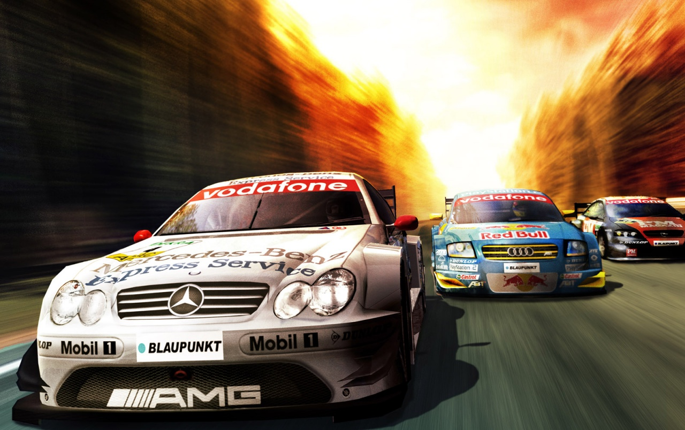
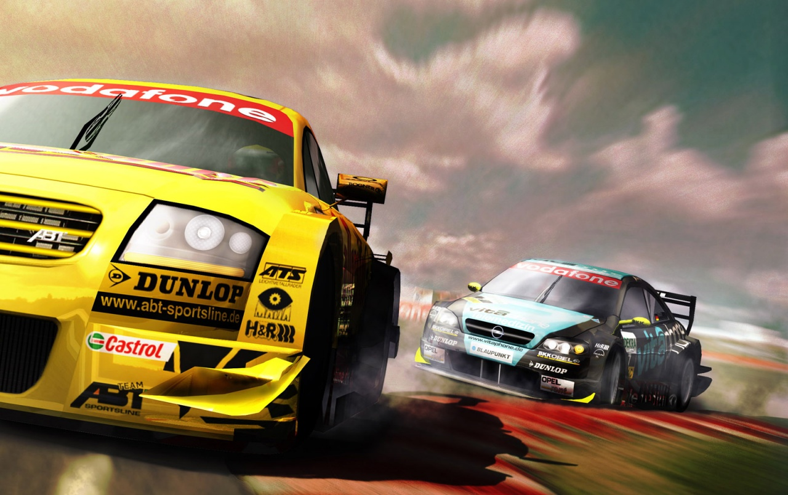
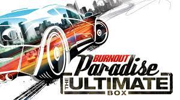
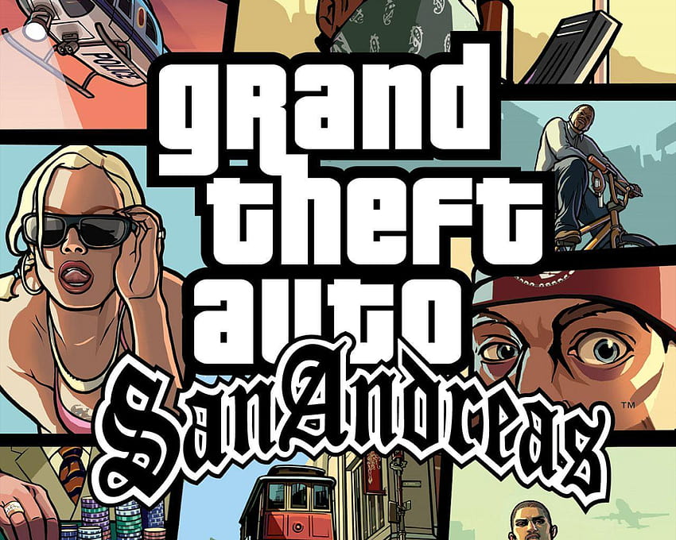

AQUI ENCONTRARAS LOS LINKS DE DESCARGA Y ARTICULOS DE LOS TUTORIALES
TOCA Race Driver 3 se presentó el 26 de mayo de 2005 bajo el título TOCA Race Driver 2006. El nombre Race Driver 2006 se usó más tarde para un juego de PlayStation Portable Race Driver. En diciembre de 2005 se lanzó una demostración para un jugador. Fue lanzado en febrero de 2006 para Windows, PlayStation 2 y Xbox. En febrero de 2007 se lanzó una versión para PlayStation Portable titulada TOCA Race Driver 3 Challenge. El 24 de octubre de 2008 se lanzó un port para Mac OS X. El juego fue parte de la alineación inicial de GOG.com.
LEER ARTICULO Y DESCARGAREl modo carrera ofrece una selección más amplia de campeonatos que los juegos anteriores, con Supertruck y Rallycross además de los formatos tradicionales de turismos. Sin embargo, no por primera vez en la serie, el Campeonato Británico de Turismos no se incluyó, pero la franquicia continuó licenciando el nombre TOCA en el título. Además, el juego en línea se destacó mucho, con soporte para hasta 8 jugadores en Xbox Live.La versión para PC del juego presenta 31 ubicaciones de carreras globales ficticias y con licencia que ofrecen 48 pistas.6 Estos incluyen Hockenheimring de la serie alemana DTM y Surfers Paradise de la serie australiana V8 Supercars. La versión de PS2 presenta una pista adicional, Catalunya.7 La versión de PlayStation 2 también permite hasta 8 jugadores de PS2 en línea, sin necesidad de un servicio de Internet de banda ancha.Se lanzaron dos conversiones de PSP en 2005 y 2006; el primero es TOCA Race Driver 2 en Europa y Japón y el segundo es Race Driver 2006 en Estados Unidos. El juego continuó usando un modo de carrera con guion como se introdujo en el juego anterior "Race Driver", pero eliminó al personaje de Ryan McKane. Las escenas de desarrollo de la historia se desarrollaron desde una perspectiva en primera persona, con otros personajes que nunca se dirigieron al usuario por su nombre (similar al método de narración de títulos posteriores de Need for Speed). La versión para teléfono móvil se lanzó solo en los Estados Unidos unos meses después.
LEER ARTICULO Y DESCARGARBurnout Paradise (conocido anteriormente como Burnout 5) es un videojuego de carrerasabierto de la serie Burnout. Fue anunciado el 22 de enero de 2008 en América del Norte, y el 25 de agosto de 2008 en Europa, para PlayStation 3 y Xbox 360. en PC fue anunciada el 9 de mayo de 2008, y lanzada el 5 de febrero de 2009; dicha versión incluye mejoras y recibe el nombre de The Ultimate Box. Entre las mejoras de esta versión están la conducción nocturna, la incorporación de motocicletas, el modo en línea expandido y una resolución de hasta 3840x1200 (para dos pantallas simultáneas). El 22 de noviembre de 2016, se añadió retrocompatibilidad para Xbox One y se relanzó en una versión remasterizada para PlayStation 4, PlayStation 4 Pro, Xbox One y Xbox One X, el 16 de marzo de 2018, para PC se relanzó el 20 de agosto de 2018 en Origin y finalmente el 19 de junio45 de 2020 se lanzó la versión remasterizada para Nintendo Switch. El juego está ambientado en la ficticia ciudad de Paradise City.
LEER ARTICULO Y DESCARGARGrand Theft Auto: San Andreas es un videojuego de acción-aventura de mundo abiertobritánico desarrollado por Rockstar North y publicado por Rockstar Games. Fue confirmado oficialmente por la mencionada Rockstar Games a principios de marzo de 2004, y su fecha de lanzamiento tentativa se programó para el 19 y 22 de octubre de ese año para América del Norte y Europa. Distribuido por Take-Two Interactive, San Andreas fue lanzado originalmente para PlayStation 2 el 26 de octubre de 2004, aunque posteriormente se publicaron distintas versiones, tanto para videoconsolas de sexta, séptima y octava generación, así como ordenadores, y teléfonos inteligentes.
LEER ARTICULO Y DESCARGAR